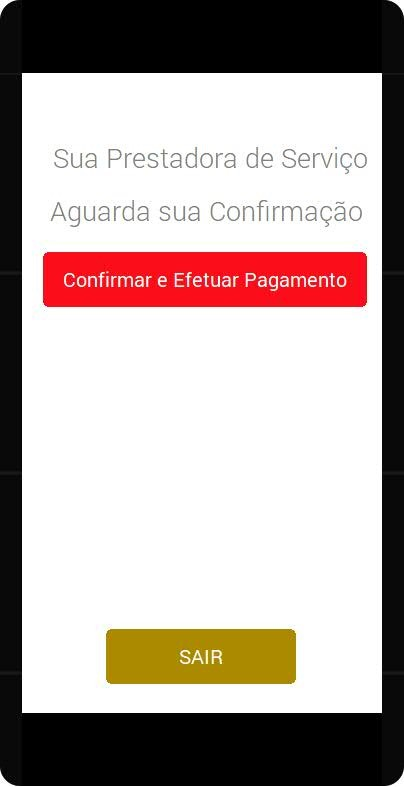

Como todos os aplicativos, que envolve informações de determinada pessoa, o cadastramento e feito através de informações, após indivíduo clicar na opção cadastrar mostrado na figura acima, será redimensionado a tela de cadastro, podendo adicionar suas informações.
Após fornecer suas informações passara para próxima etapa do cadastramento, onde ela seleciona o tipo de usuário desejado, tendo a possibilidade de escolher entre duas opções, sendo elas empregador ou prestador.
Caso o Individue selecione a opção empregador, terá a tela de cadastro de pagamento, onde ela informara a forma de pagamento.
Caso o Individue selecione a opção prestador, terá a tela de cadastro de recebimento, onde ela informara a forma de recebimento.
Ao concluir o cadastramento tanto o perfil empregador quanto o prestador serão redimensionados, para a tela de login, onde informaram o usuário e a senha
O empregador terá a opção de anunciar, conferir o status de serviço, visualizar os ranks, conferir todos os serviços solicitados e também terá a opção, de editar seu perfil clicando na figura onde poderá inserir foto.
O prestador terá a opção de candidatar-se a vaga, conferir o status de serviço, visualizar os ranks, conferir todos os serviços prestados e também terá a opção de editar seu perfil clicando na figura onde poderá inserir foto.
No perfil empregador clicando na opção anunciar, abrira uma tela de Anuncio onde ele devera informar o dia para receber o prestador e o valor a pagar, após publicado ele devera aguardar e acompanhar o status de serviço.
No perfil empregador, clicando na opção status de serviço, abrira uma tela de status onde ele acompanhara a situação do serviço, se não over candidatos ele não conseguira abrir a tela de status, caso tenha um candidato interessado no anuncio do empregador.
O empregador clicando no contratar do seu candidato desejado aparecera uma mensagem, após receber a mensagem o empregador devera esperar o serviço ser prestado e concluído no dia e no local desejado, o Prestador devera informar pelo aplicativo o termino do serviço.
Já na tela do prestador quando ele clicar em candidatar-se.Automaticamente redimensionara para uma tela onde estarão os anúncios ele escolhera o melhor local para prestar o serviço clicara em concorrer.
Após clicar em concorrer o prestador devera aguardar a resposta do empregador.
O prestador deverá receber uma mensagem em seu numero com a confirmação onde ele poderá prestar o serviço, o prestador devera prestar o serviço no dia correto e após a conclusão do serviço o prestador devera entra em status do serviço e informar a conclusão do serviço.
Logo após o prestador informar a conclusão de serviço o empregador recebera uma mensagem no numero e será liberado uma opção na tela de status para confirmar e efetuar o pagamento.
Após a confirmação o dinheiro cairá diretamente na conta do servidor sendo descontado 10%, onde o sistema depositara automaticamente na conta do prestador, facilitando diminuindo os riscos de roubos. Será enviada uma mensagem privativa para o prestador e empregador concluindo a finalização do processo do sistema. Após receber essa mensagem o aplicativo dará uma tela com a opção de dar sua nota tanto para o prestador quanto para o empregador.
Terminado esse procedimento, o sistema estará a oportunidade, do empregador solicitar mais serviços.
Tanto o Empregador quanto o prestador de serviço clicando na opção rank levara ele a tela de rank, onde mostra quais os empregadores que mais fizeram publicações e também os prestadores que mais prestaram serviços com suas classificações.